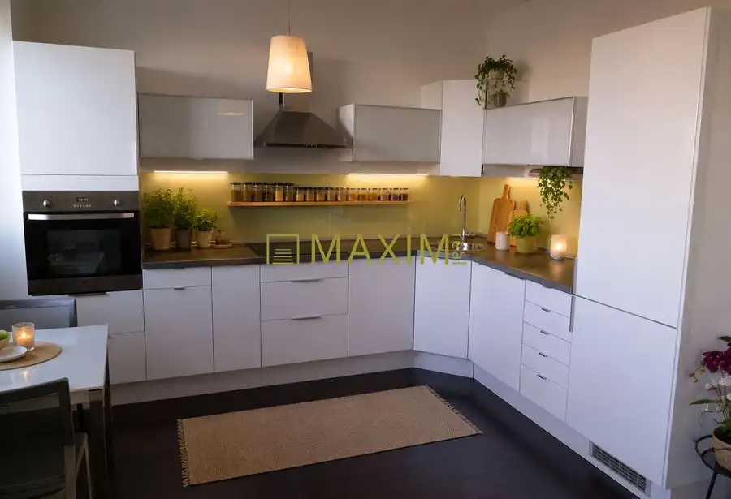
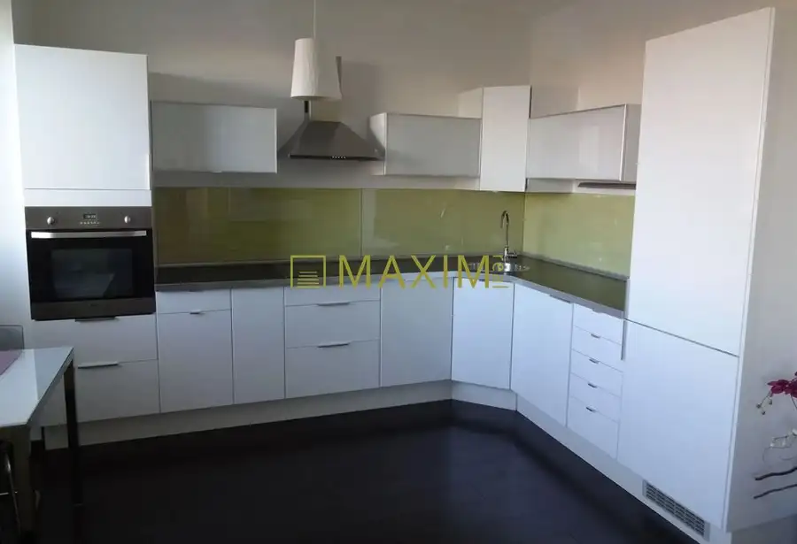
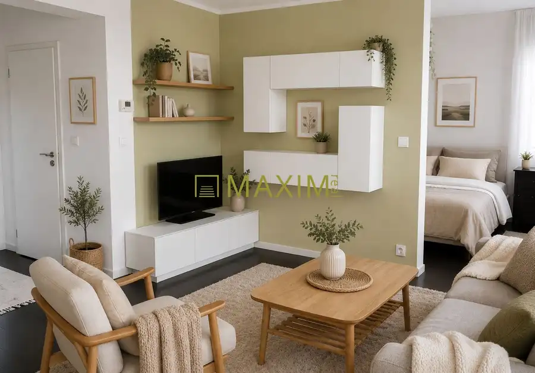
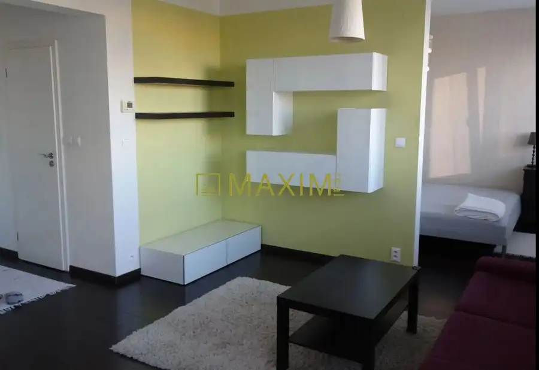
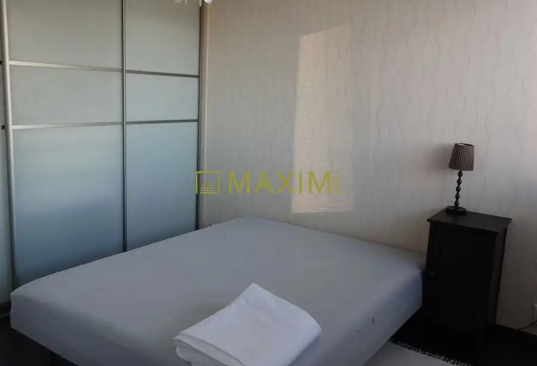
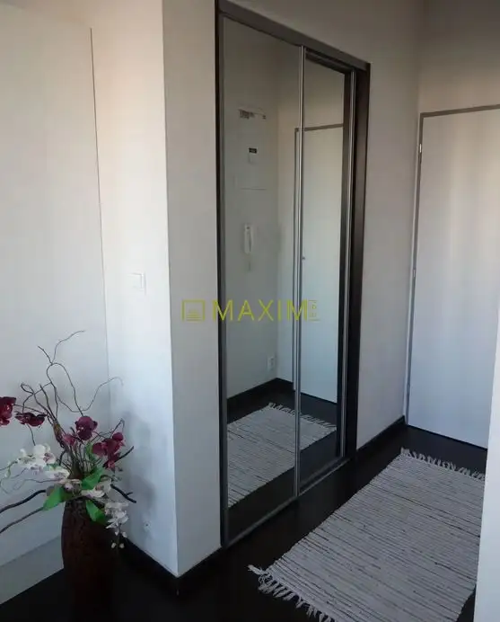
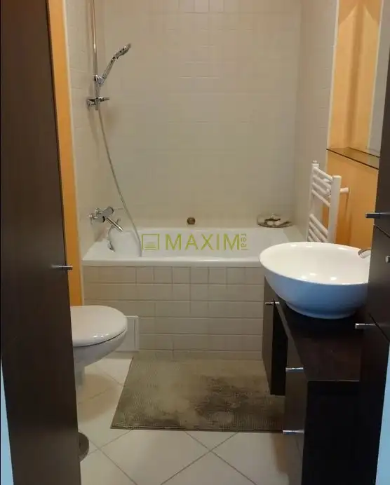
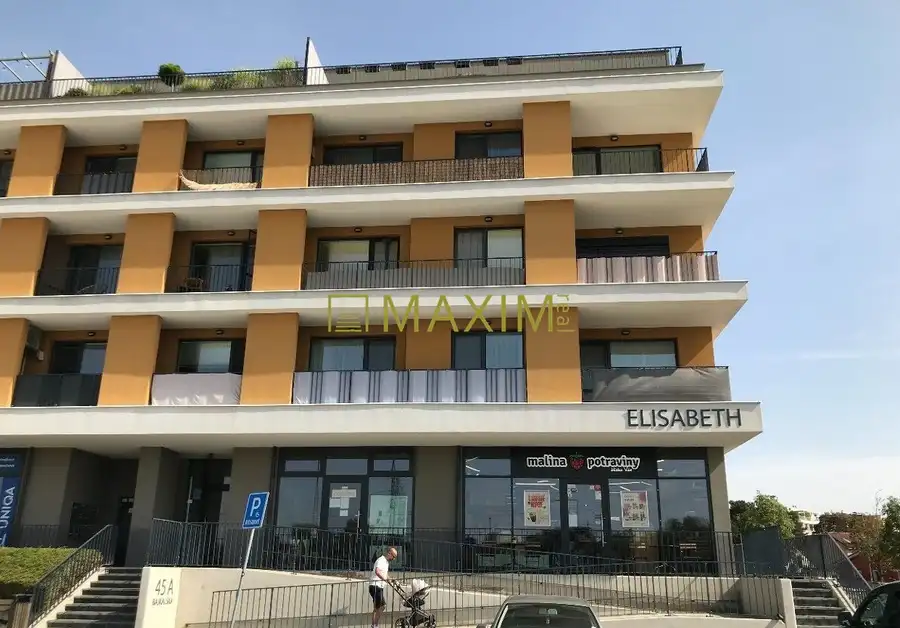
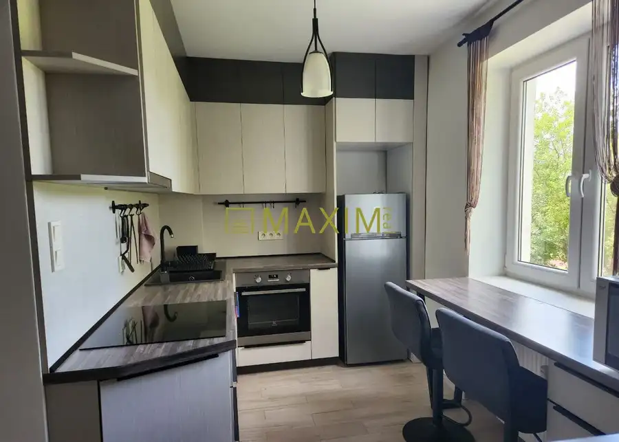
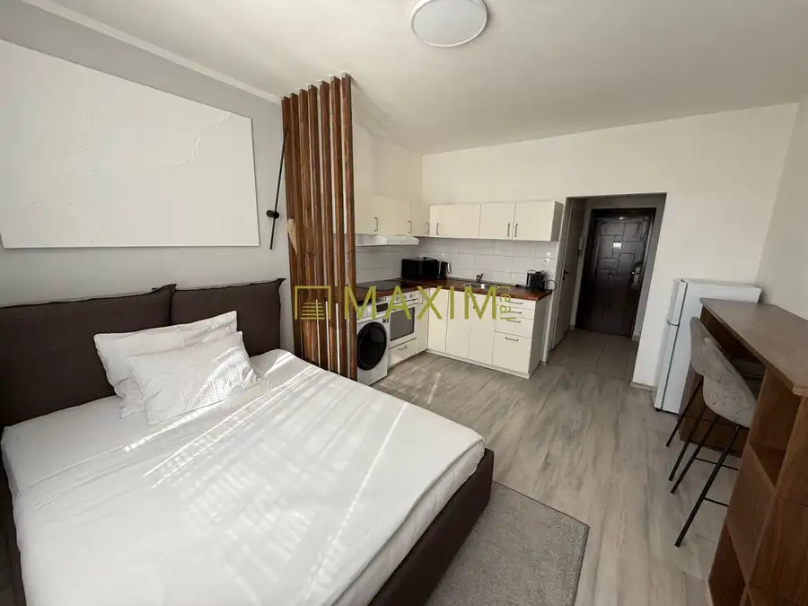

1,5-izbový byt v tehlovom dome, Záporožská ulica
Petržalka, Bratislava







- Dispozícia2-izbový
- Plocha40 m²
- Poschodie3. z 7
- StavKompletná rekonštrukcia
- VlastníctvoOsobné
O nehnuteľnosti
Ponúkame na predaj 1,5-izbový, kompletne zariadený a slnečný byt orientovaný na JV, vo vyhľadávanej lokalite Petržalského Korza, na ulici Záporožská. Byt je súčasťou 17 ročného bytového domu, disponuje výmerou 40 m2, nachádza sa na 3. zo 7. poschodí s výťahom a prislúcha k nemu pivničná kobka. Dispozícia bytu: - vstupná chodba- obývačka spojená s kuchyňou - oddelená spacia časť s možnosťou osadenia dverí- kúpelňa spojená s WCByt disponuje samostatným plynovým kotlom a zásobníkom na vodu, čo sa značne odzrkadľuje na nízkych mesačných nákladoch za jeho užívanie – len 110,-Eur vrátane elektriny a plynu. Poloha bytu ponúka kompletnú občiansku vybavenosť, výbornú dostupnosť do centra mesta vďaka MHD, blízka železničná stanica Petržalka je priamym napojením na Viedeň a lokalita je zároveň s výborným prístupom cyklotrás.Cena nehnuteľnosti je 220.000,-Eur a bude k nej pripočítaná sprostredkovateľská odmena vo výške 4.000,- Eur, v ktorej sú zahrnuté aj všetky poplatky, právny a hypotekárny servis.Konečná cena nehnuteľnosti vrátane provízie je 224.000,-Eur.Prečo kupovať nehnuteľnosť prostredníctvom realitnej kancelárie MAXIM Real?- neplatíte žiadne poplatky spojené s predajom a prevodom nehnuteľnosti, okrem bezplatného právneho servisu, spracovania kúpno-predajných zmlúv, spracovania návrhu na vklad do katastra, hradíme tiež poplatky za podanie návrhu na vklad do katastra, správne poplatky za výpis z listu vlastníctva a poplatky za osvedčenie podpisov na kúpnych zmluvách.- k dispozícii je Vám hypotekárny špecialista, ktorý pohodlne zariadi Vašu hypotéku a vo väčšine prípadov dojednáva výhodnejšie podmienky, ako keď si klient hypotéku vybavuje sám. Jeho služby sú pre Vás zdarma a navyše pokiaľ bude výška úveru aspoň 70.000,-Eur, získavate bonus- refundujeme vám 150,-Eur z poplatku za znalecký posudok.- kompletný servis máte vyriešený pohodlne a bezpečne, zmluvy sú spracované advokátom. Kontakt: Ing. Neubert Ivana, neubert@maximreal.sk, tel.: 0908 454 633
Parametre
- Cena vrátane energií
- Nie
- Druh
- 2 izbový byt
- Dátum zverejnenia
- 07. 10. 2026
- Energetický certifikát budovy
- nie je
- Orientácia
- Juhovýchodná
- Podlažie
- 3
- Počet nadzemných podlaží
- 7
- Rok výstavby
- 2009
- Stav nehnuteľnosti
- Kompletná rekonštrukcia
- Typ
- Predaj
- Typ konštrukcie
- Tehlová
- Umiestnenie
- Ďalšie nadzemné podlažie
- Vlastníctvo
- Osobné
- Vybavenie
- Pivnica, Výťah
- Zariadenie
- Zariadené kompletne
- Úžitková plocha
- 40 m²
Kde to je


Mohlo by Vás zaujímať

BytNové 328 000 €3- izbový byt vrátane parkovacieho miesta / Bajkalská ulica Ružinov, Bratislava 3-izbový71 m²3. podlažie
BytNové 275 000 €2- izbový byt na ulici Jelačičová Ružinov, Bratislava 2-izbový50 m²2. podlažie
BytNové 179 800 €Garsónka v Starom meste, Záhradnícka ul. Staré Mesto, Bratislava 22 m²4. podlažie